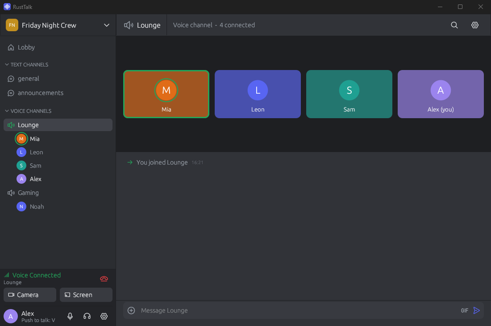
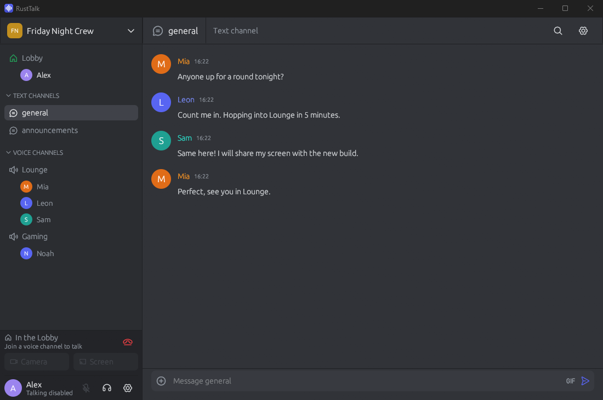
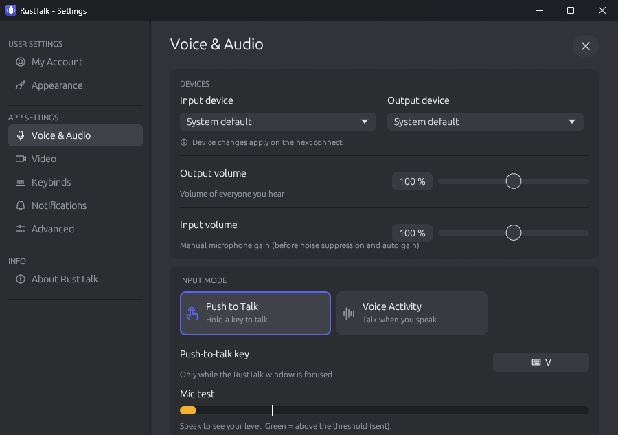

RustTalk is a lightweight, encrypted voice, video and text chat. A Discord-style app with a TeamSpeak-style server you run yourself. No accounts, no cloud, no tracking.
RustTalk ist ein schlanker, verschlüsselter Voice-, Video- und Text-Chat. Eine App im Discord-Stil mit einem Server im TeamSpeak-Stil, den du selbst betreibst. Keine Accounts, keine Cloud, kein Tracking.

Built in Rust for low latency and low CPU usage. One small app, one small server.
In Rust gebaut für geringe Latenz und wenig CPU-Last. Eine kleine App, ein kleiner Server.
Opus audio, AI noise suppression, echo cancellation and automatic gain. Push-to-talk or voice activity.
Opus-Audio, KI-Rauschunterdrückung, Echounterdrückung und automatische Lautstärke. Push-to-Talk oder Sprachaktivierung.
Share a screen or a single window with computer audio, up to 1080p. Webcam at the same time.
Bildschirm oder einzelnes Fenster mit Systemton teilen, bis 1080p. Webcam gleichzeitig.
Channels with history, images and GIFs, replies, @mentions, editing and search.
Kanäle mit Verlauf, Bildern und GIFs, Antworten, @Erwähnungen, Bearbeiten und Suche.
TLS for the control connection with certificate pinning, ChaCha20-Poly1305 for voice and video.
TLS für die Steuerverbindung mit Zertifikat-Pinning, ChaCha20-Poly1305 für Sprache und Video.
Your server, your data. Pick a name and connect. Optional password or invite links.
Dein Server, deine Daten. Namen wählen und verbinden. Optional mit Passwort oder Einladungslinks.
Admins and moderators, move, kick and ban, audit log. Poke someone with a message, TeamSpeak style.
Admins und Moderatoren, verschieben, kicken, bannen, Audit-Log. Jemanden mit Nachricht anstupsen, wie bei TeamSpeak.
A single exe for the app and a single binary for the server. Runs on a tiny VPS.
Eine einzige exe für die App und eine einzige Datei für den Server. Läuft auf einem kleinen VPS.
The app updates itself with one click. The server updates with one command. Both verify SHA-256.
Die App aktualisiert sich mit einem Klick, der Server mit einem Befehl. Beide prüfen SHA-256.
Dark, clean and familiar. Click to enlarge.
Dunkel, aufgeräumt und vertraut. Zum Vergrößern anklicken.


Download the app, enter the server address and your name, and you are in. No sign-up, no email.
App herunterladen, Serveradresse und Namen eingeben, fertig. Keine Registrierung, keine E-Mail.
Download for WindowsFür Windows herunterladenAll downloads come straight from the official GitHub releases.
Alle Downloads kommen direkt aus den offiziellen GitHub-Releases.
Windows 10/11, 64-bit. Installs itself for your user, no admin rights needed. Updates in the app.
Windows 10/11, 64-Bit. Installiert sich für deinen Benutzer, ohne Adminrechte. Updates direkt in der App.
rusttalk-windows.exex86_64, single binary with systemd service. One port: 7331 TCP + UDP.
x86_64, eine einzige Datei mit systemd-Dienst. Ein Port: 7331 TCP + UDP.
rusttalk-server-linux-x86_64.tar.gzWindows server, checksums, older versions and the Linux app (build from source) are on GitHub.
Windows-Server, Prüfsummen, ältere Versionen und die Linux-App (aus dem Quellcode bauen) gibt es auf GitHub.
All releasesAlle ReleasesAny small Linux VPS with systemd works. Debian or Ubuntu, 1 CPU, 512 MB RAM is plenty for a group of friends.
Jeder kleine Linux-VPS mit systemd reicht. Debian oder Ubuntu, 1 CPU und 512 MB RAM genügen für einen Freundeskreis.
wget https://github.com/JakronCode/RustTalk/releases/latest/download/rusttalk-server-linux-x86_64.tar.gz
tar xzf rusttalk-server-linux-x86_64.tar.gzCreates the user rusttalk, installs to /opt/rusttalk/server/ and starts the systemd service. Edit server.toml for name, password and channels.
Legt den Benutzer rusttalk an, installiert nach /opt/rusttalk/server/ und startet den systemd-Dienst. In der server.toml stellst du Name, Passwort und Kanäle ein.
cd rusttalk-server
useradd --system --no-create-home --shell /usr/sbin/nologin rusttalk
install -d -o rusttalk -g rusttalk /opt/rusttalk/server/bin
install -o rusttalk -g rusttalk -m 755 rusttalk-server /opt/rusttalk/server/bin/
install -o rusttalk -g rusttalk -m 644 server.toml /opt/rusttalk/server/
install -m 644 deploy/rusttalk-server.service /etc/systemd/system/
systemctl daemon-reload
systemctl enable --now rusttalk-serverAllow 7331 TCP and UDP in your firewall and in your hosting provider's firewall.
Erlaube 7331 TCP und UDP in deiner Firewall und in der Firewall deines Hosters.
Connect with the app to your-server:7331 and use “Become admin” in the server menu. Then create channels, invites and roles right in the app.
Verbinde dich mit der App zu dein-server:7331 und wähle „Admin werden“ im Servermenü. Kanäle, Einladungen und Rollen legst du dann direkt in der App an.
The app tells admins when a new server version is out. Update with one command:
Die App zeigt Admins, wenn eine neue Server-Version da ist. Update mit einem Befehl:
sudo /opt/rusttalk/server/bin/rusttalk-server update